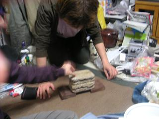
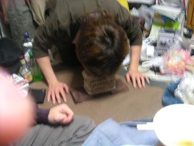
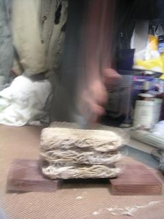
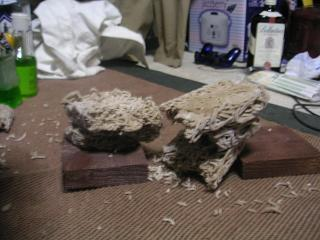

日々、想った
〜過去感じたことがつれづれと〜
（できるだけ最大化してお読みください）
過去、想ふ
誕生日(CtrlキーとAを押してみて)。４/１５
今日は誕生日、タケユキです。
ばあどだけど。
誕生日だってのに日付変わってもメールこねぇ。
まあ正直な話、今日は誕生日イブなわけで、
世間一般ではさほど重要視されてる日ではないから当然といえば当然かもしれん。
しかし、よく考えてもみろ。
キリストの誕生日は12月25日、クリスマスであるにもかかわらず、
24日のクリスマスイブのほうが大騒ぎしているではないか。
俺＝キリストみたいなもんだから、俺も誕生日イブを祝うべきではないかと。
4月15日はタケユキイブ。
将来タケユキ教が4大宗教となる頃には重要な日になるから覚えておくように。
今日の筆者：ばあど（キモチはタケユキ）
なにがタケユキ教やねん。
ひったくり。４/１４
バイト後雑談中のとあるひととき、タケユキです。
「でもほんと大阪って危険ですよね〜」
「俺ひったくり何回も見たことあるわ」
「マジですか？」
「それよりひどいやつもおって車にいたずらするやつも多いな、
ガラス割られたこともある」
「ちょっと前までパジェロとかインプレッサが
よく狙われてましたよね」
「そうそう、前パジェロ乗ってた時やられて
財布盗まれた、
でもまあパジェロはもう生産中止になっとるけど」
「やっぱりよく狙われてたからですか？」
そんなわけないだろ。
今日の一日：部屋完成まであと少し。
もういくつ寝ると。４/１３
最近おもしろいことが起きない＝ネタがない、タケユキです。
今日も授業がありました、なので学校行きました。
でも２年になって数学系の授業ばっかりになってやる気がおきません。
まあもともとやる気があるかって言ったらないんだけども。
今日はバイトの知り合いに用事があって梅田に行った。
それから時間があったんで梅田のHEPナビオっていうところにある
和雑貨のお店に行って買い物してた。
一緒に行ったそのバイトに人に俺がもうすぐ誕生日だって話をしたら
「なら何でも好きなもの一つ買ってやるよ」
って言ってくれたんでマガジンラックを買ってもらった。
最近本をもらったりプレゼントをもらう機会がちょっと増えた。
話の中にちょこっと出てきただけなんで見逃しそうだから
ここでもう一度言っておきます、もうすぐ誕生日です。
正確には１６日が誕生日です。
広島からだと明日送っても十分間に合うと思います。
のちのちのことを考えての先行投資はいかがですか？
今日の言いたかったこと：俺は将来ビッグになる。
徒然。４/１２
学校始まりました、タケユキです。
昨日の夜、高校の時の友達（広島人には「さんま」
で通じると思う）が泊まりにきてた。
でも月曜から授業あるからってんで
日曜夜９時くらいにうちにきて、朝７時に帰って行った。
人が来たら最近いつもウイニングイレブン（サッカーゲーム）勝負してるんで
勝負してたら、気がついたら二時過ぎ、三時過ぎ。
要するに今日も寝不足なわけです。
２年前期は月曜は授業が４限だけなんで楽だって言えば楽なんだけども
そんな中途半端な時間（午後３〜４時）を束縛されるのも勘弁しろって思う。
今日の一日：とある人に本をもらった。
年。４/１１
また更新できんかったよ、タケユキです。
最近こういう日が増えてます。
今日の一日：４/１１分のに書いてます。
年。４/１０
頭が痛い（初二日酔い）、タケユキです。
昨日はバイト先のお別れ会みたいなのがったんで夜梅田に行った。
酒飲んだ。
初二日酔い、おやすみなさい。
今日の一日；寝て日曜が終わる・・。
二度目の帰省。４/９
大阪戻ってきました、タケユキです。
昨日夕方から実家に帰ってました。
晩ご飯を実家で食べてたら３丁目から
電話、遊びに行くことに。
三月の帰省の時に惨敗したウイニングイレブンで再度勝負した。
一戦目勝利、二戦目勝利のニ連勝。
俺がちょっと本気でやればこんなもの、格の違いというやつだ。
と思ったもつかの間、七連敗くらいした。
格の違いというやつだ。
それからそのまま３丁目宅で就寝。
今日の朝、大阪に戻る前に３丁目と一緒に
広大に行ってきた。
時間がなかったんで
そんなに長いこといなかったんだけど
高校の時の友達が弓道部で勧誘してたのを見かけた。
弓道部のチラシもらって広大を後にした。
実は今回の急な帰省、中学の時の友達のお通夜に出席するためでした。
中学の時は同じクラスだったり、同じ塾だったりで
けっこう仲良かったんだけど、
高校が違ってからはそんなに遊んだりしなくなった。
それでも通学中の電車で会うとちょくちょく話してた。
そんな友達がもういないってのが信じられない。
友達から電話でその知らせを聞いてから、
お通夜に行って、本人の顔を見てきた今でも信じられない。
本当にただ眠ってるみたいだった。
中学の同級生とか何年ぶりに会う顔がたくさんあったけど、
どんな顔して、どんな言葉をかけたらいいのかわからなかった。
成人式まであと９ヶ月、みんなが集まるのはその時でよかったのに。
３月の帰省の時に使った青春切符の残り、
また帰省に使うことになるとは、思いもしなかった。
今日の想い：悔やみきれない。
急。４/８
ちょっと実家帰ってきます、タケユキでした。
今日のシリーズ：ありません。
昨日の話。４/７
昨日は劇団四季行きました、タケユキです。
他のほとんどの人と同じく
俺も
ミュージカルってものを見に行く人じゃないんだけど
ちょっとした事情で手元にチケットがあったので行ってきました。
今まで俺が見たことあるミュージカルってのは
高校のときの芸術観賞で見た「ヘレン・ケラー」くらい。
手のひらに「W・A・T・E・R」って書いて「ウォーター！」
っていうミュージカル。
そのくらいなんでミュージカル自体にそこまで期待してなかったんだけど
劇団四季は有名なんでおもしろいんだろうなと思ってたら
開演２分でド肝を抜かれた。
これはもう言葉では表現できない、
ただ一言言うならば「見ろ」と、その一言だけ言いたい。
最初から最後まで感動しっぱなしだった。
しかもミュージカルってそんなに長くないんだろうと
勝手に思ってたんだけど、
「美女と野獣」前半後半あわせて二時間半もあった。
他の四季公演も見るしかないと勝手に運命を感じた。
今日の一言：チケット１枚１万円でも納得。
寝ます。４/６
おやすみなさい、タケユキです。
夕方劇団四季の「美女と野獣」を見に行って、
夜サークルの鍋があって、今（午前６時）帰宅。
眠いです、寝ます。
今日の一言：おやすみなさい。
人材派遣。４/５
俺はけっこう人見知りらしい、タケユキです。
今日はレストランの方のバイトがあったんで夕方梅田に行った。
バイト先のレストランがあるのは梅田からちょっと歩いたところにある
ビジネス街の近くにあるレストラン街。
つまりご近所さんもレストランばっかりなわけです。
そんなわけで隣のレストランの人とは顔見知り程度だったりはします。
今日バイト入ってタイムカード通して数分後、店長に呼ばれる。
「今日隣の店、人足らんらしいから手伝ってやって」
バイトなのに人事異動を言い渡される。
というわけで今日は隣の店（店舗の系列とかの関係は全くなし）
のお店で働いてた。
人が足らないって言ってただけあってかなり忙しかった。
ってよりもいきなり顔見知り程度の人達の中に放り出されて
緊張しまくりで大変だった。
迷惑だけはかけないよう、グラスだけは割らないよう必死で
やった。
バイト終わってからまかないもこっちのお店でいただいた。
俺がバイトしてるとこよりもうまかった。
その日だけの手伝い（ヘルプ）だったんで給料すぐもらえた。
いきなりだったってことだったからちょっと多めにくれた。
そこのバイトの人達に「またおいで」って言われた。
ほんとに移籍するのも悪くないかもしれない。
今日の一日：でもやっぱり気を遣った。
花より・・・。４/４
この不安定な天気どうにかしれ、タケユキです。
今日はサークルで花見をやった、というかやる予定だった。
でも今日の大阪は日中は雨で花見日和とは言いがたい。
それで夜桜でも花見は花見ってことで夜まで待つことになった。
***************************************************************
夜。雨はやみ、花見をすべく大学へ。
ほんとは大阪城とか万博あたりに行く予定だったんだけども
中途半端な天気でしかも遅かったんでもう大学内でいいだろと妥協。
それで大学の食堂前に集合したんだけどもあまりの寒さに
「おい誰かんちで鍋にしようや」
ってことになり、花を見ることすら妥協。
それから鍋用食材を買い込み、うちで鍋した。
鍋と言えば白菜、ネギ、鳥肉で最後にうどんかご飯なんだろうけど
（俺はそう）、
今回はスーパーで冷凍のそばが５食分セットで売ってたらからそばになった。
この冷凍そば、パッと見が瓦に似てたことから
我が家が戦場になる。

第一回冷凍そばカチ割り選手権。
一番手は俺。
最初空手っぽく手で叩き割ろうとしてたら周りからヤジが起きた。
「いやいやいや、もちろんココ（頭を指差しながら）だろ」
内心マジかよと思ったけどももしかしたら割れるかもと思って
頭でいった。

記録：１枚（枚？）
意外に固い、冷凍そば。
まあ
凍ってるんだから当たり前か。
ってかそば固いってよりも頭痛い。
一番手が頭部負傷により競技続行不可能のため、選手交代、
二番手と交代して競技を観戦してた。
そしたら徹底的瞬間をカメラに収めることに成功。

俺が頭でやって返り討ちにあったのを見て、
躊躇することなく手刀を叩き込む。

記録：３枚。
割るそばがなくなり第一回冷凍そばカチ割り選手権は幕を閉じたわけですが、
この二番手も手を負傷、血が少し出てた。
テレビとかで瓦割りをする時に瓦の上にタオルとか置くのは
手を保護するためだったんだって身を以って知った。
挑戦者は確実に負傷するという危険極まりないこの競技、
後片付けが大変でした（ちっさい破片が飛び散りすぎ）。
今日のそば：ちゃんと全部食べました。
不眠症。４/３
さよなら一時的リッチマン、慢性的貧乏になりました、タケユキです。
外出しようと思ったんだけどめんどくさくなったひきこもり。
少し前までインテリアにこってて
アジアンテイストな部屋作りを目指してたんだけども
アジアン熱もちょっと冷めて部屋作りも停滞中。
そんな理由や最近眠たい病にかかったらしくめちゃくちゃ寝る。
昨日寝たのがたしか０時か１時、
それなのに今日活動開始したのが昼の１２時すぎ。
春休み入ってからだんだん睡眠時間が長くなってる気がする。
このまま進むとずっと寝たままになる日が来るんじゃないかって心配だ。
今日の本音：別にそこまで心配なわけじゃない。
凹。４/２
凹んでいるので今日の更新はお休みしみます、タケユキでした。
今日の理由：帰省時のヘタレ関連。
無想。４/１
今日の晩ご飯は餅２つ、タケユキです。
買い物行くのがめんどくさくなって家にあるものですませんたんですけど
やっぱり餅２つじゃ全然足らない。
そんなわけでピザポテトとポテトチップス「関西出しじょうゆ」を
食べながら更新中。
俺太るんじゃねえかって心配です、でもお菓子超うめえ。
エイプリルフールなんでなんか気の利いた嘘でもつこうかと
考えたんだけども思いつきませんでした。
そんなできそこないな人間であることを自覚しながら
今日の日記を終わりにしたいと思います。
今日の格言：人間気の利いた嘘つけて初めて一人前。